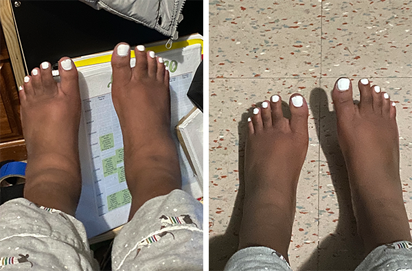
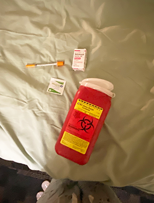

Because scleroderma is a highly variable disease, it requires an individualized approach to treatment. Most medications used for treatment are immunosuppressants, meaning they stop your immune system from damaging your body’s healthy cells.
Some medications that work for me may not work for others, but here are some medications that are used to treat symptoms:
A calcium channel blocker known for reducing the frequency, duration, severity of attacks, pain and disability associated with Raynaud's phenomenon.
Similar to Sildenafil, Nifedipine allows blood vessels to relax and open, facilitating blood circulation.
A corticosteroid/inflammatory drug used to treat rheumatologic diseases by decreasing the activity of the immune system.
Prednisone is a treatment option for scleroderma. In localized scleroderma, steroid creams may be used for patches of superficial skin symptoms, while oral prednisone may be used for more extensive disease.
My experience:I was on prednisone for about a year. I began to use it when I noticed my ankle joints swelled from pain. I can say Prednisone helped my ankles get back to normal, but extended use of steroids can change how fat is distributed in the body, causing one’s face to swell which is a condition known colloquially as “moon face.” I am no longer taking it, but I do think it helped.
Used to treat stomach ulcers (gastric and duodenal), erosive esophagitis (heartburn or acid indigestion), and gastroesophageal reflux disease (GERD).
In scleroderma, the gastrointestinal tract is the most involved system, other than the skin, with the esophagus most affected. Typical symptoms in scleroderma patients range widely, including:
My experience: I have found that famotidine has aided in my lack of acid reflux and heartburn. I’ve had GI episodes before, but they got better with the use of famotidine
A scleroderma treatment injected subcutaneously (below the skin) that works by suppressing the immune system.
It is commonly used to treat a variety of other conditions as well, such as cancer, rheumatoid arthritis, and psoriasis.
Although the U.S. Food and Drug Administration has not approved methotrexate for scleroderma some researched supports its use for treating skin symptoms in the early stages of diffuse systemic scleroderma.
My experience:I was on Methotrexate for just under a year and looking back it was a weird experience to inject myself with a syringe. Luckily, I am not afraid of needles, and I also felt cool about being strong enough to accomplish that myself.
An antibody medication used to treat certain autoimmune diseases and types of cancer.
Rituximab works by lowering the number of these B-cells, to reduce inflammation, pain, swelling and joint damage.
Because so little is known about scleroderma, there are still plenty of active studies of treatment method. Rituximab has appeared to be an effective and safe treatment for scleroderma and is administered via 2-dose infusion every 6 months. The initial infusion occurs over the course of 7 hours. The second is administered two weeks after the first and takes less time.
My experience:Even though the infusions take long, I really enjoy my “Ritux Days.” Because the medicine is administered in a children’s hospital, I lie in a bed all day and receive hospital snacks as I fall in and out of consciousness due to Benadryl (which is meant to prevent allergic reaction). Pretty relaxing!